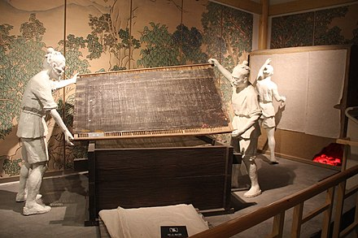

宣纸的制作工序大致可分为十八道，如果细分，则可超过百道。其中有保密工序，不为外人所知。伐条宣纸的传统做法是，将青檀树的枝条先蒸，再浸泡，然后剥皮，晒干后，加入石灰与纯碱（或草碱）再蒸，去其杂质，洗涤后，将其撕成细条，晾在朝阳之地，经过日晒雨淋会变白。然后将细条打浆入胶：把加工后的皮料与草料分别进行打浆，并加入植物胶（如杨桃藤汁）充分搅匀，用竹帘抄成纸，再刷到炕上烤干、剪裁后整理成张。宣纸的每个制作过程所用的工具皆十分讲究。如捞纸用的竹帘，就需要用到纹理直，骨节长，质地疏松的苦竹。宣纸的选料同样非常讲究。青檀树皮以两年以上生的枝条为佳，稻草一般采用砂田里长的稻草（其木素和灰分含量比普通泥田生长的稻草低）。
宣纸的制作工艺是一个复杂且需要多道工序的过程。下面分别分析每个步骤的作用：
1. **伐条与蒸煮**：
- 作用：通过伐条，将青檀树的枝条获得，然后经过蒸煮的过程，使得枝条更易于剥皮和后续的处理。
2. **浸泡**：
- 作用：使得青檀树枝条的纤维更加柔软，便于后续剥皮。
3. **剥皮**：
- 作用：去除青檀树枝条的外皮，以准备后续的处理。
4. **晒干**：
- 作用：去除多余的水分，准备加入石灰和纯碱的处理。
5. **加入石灰与纯碱（或草碱）再蒸**：
- 作用：去除杂质，使得纸张更加纯净。
6. **洗涤**：
- 作用：进一步去除残留的杂质，使得纸张更加干净。
7. **撕成细条**：
- 作用：为了后续打浆做准备，使得纤维更加细腻。
8. **日晒雨淋**：
- 作用：使得纸张逐渐变白，增加其光泽度和质感。
9. **打浆**：
- 作用：将皮料和草料进行打浆，使得纸张的纤维更加紧密。
10. **加入植物胶**：
- 作用：增加纸张的韧性和稳定性。
11. **竹帘抄纸**：
- 作用：使得纸张的厚度和平整度得以控制。
12. **刷到炕上烤干**：
- 作用：加速纸张的干燥过程。
13. **剪裁整理**：
- 作用：修剪和整理纸张，使其达到标准尺寸和质量。
每一步骤都对最终的宣纸质量有着决定性的影响，而每一道工序都有其特定的技术和经验要求。